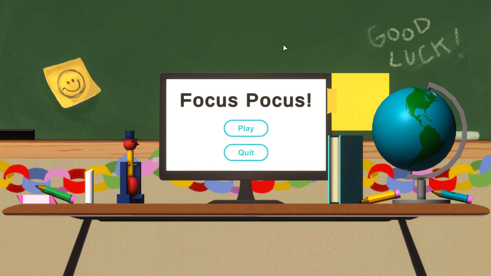

Overview

Team Size: 6 Members
Development Time: Feb 2021 - March 2021
Development Tools: Unity, Autodesk Maya, Photoshop
Genre: Sandbox / Simulation
Platform: Windows PC
My Contributions
- Designed gameplay systems
- Designed diegetic user interface
- Sound design and music selection
- Wrote design documentation
- Created UI and particle effects
Case Study
Project Overview
This project’s guidelines required our team to make a game that informs players about an under-represented group or culture. After some long discussions in the brainstorming phase, we decided to make our game about ADHD. A few people on the team had the disorder, and alongside our research, their personal experiences would help us prevent any misrepresentation on the subject. With that in mind, we created Focus Pocus, an experience that aims to shed light on the difficulties of being a student with ADHD.
Our team of 6 made Focus Pocus over 4 weekly sprints for a team-oriented game studio course. I worked in multiple areas on this project because the gameplay was very abstract and unlike anything the team (and myself) was used to building. We also had a hard time agreeing on a cohesive vision for the same reason. Long meetings and informal discussions were the only way to reach an agreement. This process took longer than usual, but we eventually decided on a mutual vision for the game. I haven’t worked on anything this unconventional before, so I learned a lot from the unusual experience. I’m glad we had to work under such a restrictive guideline for the project because, otherwise, I might not have explored such unfamiliar territory in design.

Game Intent
Our biggest worry was keeping the game fun without misconstruing the realities of ADHD. We weren’t aiming to make an ADHD simulator, instead, we wanted the game to reveal the struggles that ADHD can cause in an educational setting. This intent could only be executed through a fun and positive experience. If a player walked away from the game feeling frustrated or upset, that would ruin its purpose. Because the game was geared toward a very young audience (ages 6-10), we seriously worried kids would get the wrong message. If a young kid played Focus Pocus and had a negative outlook, we worried they might view other students with ADHD as mischievous, unintelligent, or incapable people. Kids are more naive and persuadable, so we had to ensure nothing in the game would lead them to the wrong conclusions.
To avoid these risks, we gave the player two completely separate goals. The first goal was to complete their math quiz with a high grade, and the second goal was more like an achievement system, a set of arbitrary tasks. If players got distracted and tinkered with toys in the classroom for too long, they would miss these timed questions on the math test and get a much lower grade. Although, if they only focused on the test, the narrator (who represents their subconscious) would encourage them to play with their surroundings. Each toy in the classroom had a goal assigned to it as well. For example, one task was making the globe spin an entire year (365 rotations). Players were forced into a balancing act between productivity and distractions, which delivered on the experience we had intended for our audience. ADHD can often cause that same balancing act in everyday life, but for kids in a school setting it's much harder to deal with. I’m glad we could take that experience and incorporate it into something fun for younger kids to play and learn from.
Design Process
Once we knew this game had to represent a culture or specific group of people, a big risk was thrown into the mix. What if we were to miss the mark and cause offense through this game? Our team had many long discussions about this and decided we would only choose a group of people that we could accurately represent. That meant at least a few of us on the team needed personal experiences with that culture or group. While brainstorming some subjects that would work, ADHD popped into my head because it’s a fairly common disorder that gets overlooked in many cases. After discussing this idea, we found out that two of us on the team had personal experiences. For that reason, we centered the game around ADHD, and could worry less about misrepresentation.
Next we discussed the gameplay and what message the game should convey. To learn more about living with ADHD we looked to the personal experiences our team members would share, and researched the effects the disorder has on people’s lives. We found that most students with ADHD related strongly to the struggles of an educational setting. Sitting still for hours in an environment that demands your attention sounds difficult enough, but that same experience with ADHD is obviously much worse. From then on, our main goal was capturing that struggle in the game. We wanted all players to feel a similar experience to those with ADHD, but had to achieve this through enjoyable gameplay, which became our next hurdle. The act of balancing distractions with productivity is usually most problematic in professional and educational settings, so we felt puzzled about how to transform something most people find inherently frustrating into a fun experience.

Player messing around with the chalk stick, and discovering the task to draw 5 lines
The next set of meetings were mostly dedicated to designing the gameplay, trying to get as much input from other team members as we could. This game wasn’t very conventional, so I wanted everyone on the team at the first few designer meetings for a few reasons. First off, I was worried that the open-endedness of this game concept would lead to each of us having a different picture of the game in our heads. And having more than one other person to bounce ideas back and forth with greatly speeds up the process. Not only that, but this strategy seemed to make everyone feel good about how the game looked at the end of each week, because everyone was involved in some way in the decisions made.
We came to the conclusion that the gameplay should feel somewhat cartoonish and unrealistic, so we could exaggerate the effects of ADHD to clearly communicate certain what we wanted to the player without misrepresenting the disorder. This cartoonish gameplay organically turned into a design pillar that we heavily built upon later and helped a lot with the appeal towards our younger target audience. We also wanted the player to put themselves in this scenario, and not feel like they were playing as a detached character. Hence, the game is played from a first-person view, and you interact with the game almost entirely by moving, clicking, and dragging with the mouse, just like you would in a digital quiz.
Player drops the eraser in the trash but it poofs back onto the desk after
Players are tasked with completing their math quiz on the computer, but also have to balance engagement with the distractions around them. While their next question on the quiz loads, the player has absolutely nothing to do, so they can interact and fidget with objects in the classroom to pass the time. Here’s an example of how we communicate the accidental distractions that come with ADHD through goofy and unrealistic gameplay. If the player decides not to distract themselves, the screen begins desaturating to black and white, except for all the interactable objects, which remain in full color.
There are many other examples of this cartoonish gameplay. To protect players from accidentally losing an object off the screen, objects magically respawn where they were if you lose them, but with a subtle poof effect. Another example is the narrator. He acts as the player’s subconscious and guides them towards the intended gameplay experience. However, even though we had all these objects for the player to fidget with, they weren’t rewarded in any way for those interactions (except for the reward of play itself).
Players could completely ignore the distractions and still get a perfect score on their quiz, which meant a large pool of them likely wouldn’t have the experience that we intended. This wasn’t going to work, so we spent some time discussing solutions. By the end of our meeting, we decided on adding a task system to the distractions. The tasks would give players a simple challenge to complete for every object they could interact with. For example, the player might have to drop a pencil in the trash 5 times or spin the globe an entire year. These tasks would give players a goal relevant to the distractions, so they would have a reason to fidget with the objects. The tasks also drove players' curiosity and led them to experiment more with the game. In turn, players started getting more creative with these distractions and had more fun. Fidgeting went from an optional, seemingly useless interaction, to a fun and distracting activity for everyone. Now everyone wanted to play with the objects and complete as many tasks as they could alongside the quiz.

Player neglecting their test to repeatedly toss a bouncy ball in the trash
Once we added tasks, Focus Pocus checked off all the boxes for our intended experience. We only had polish work left but didn’t have much time until the deadline. With less than a week left we put all our energy into upping the game’s quality level with improved sounds, visuals, and bug fixing for each individual object and task. In that final week, the game’s polish reached a point where the gameplay finally felt smooth and intuitive. By the end of the project, everyone on the team seemed proud of how well we executed this peculiar game, especially when considering the restrictions we had to workaround. Those four weeks of development improved my design adaptability by leaps and bounds, so in many cases, now I see creative restriction as more of a tool than a hindrance.